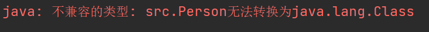
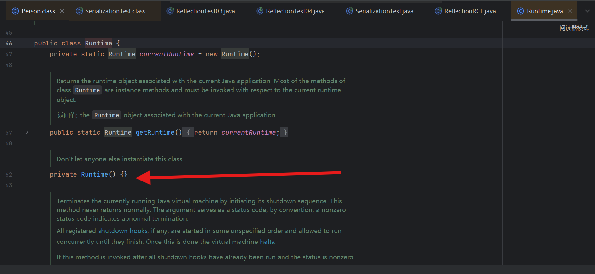
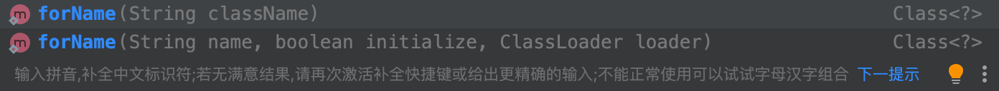
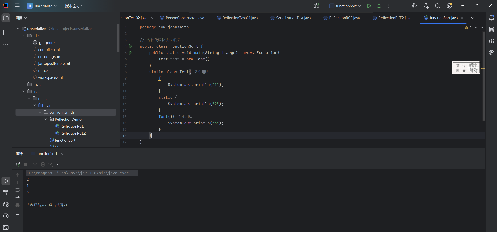

Java 的反射机制是指在运行状态中，对于任意一个类都能够知道这个类所有的属性和方法； 并且对于任意一个对象，都能够调用它的任意一个方法；这种动态获取信息以及动态调用对象方法的功能成为 Java 语言的反射机制。 反射的作用：让java具有动态性，可以让java在运行时动态创建对象 java是强类型语言，不能像php这种弱类型语言一样可以根据函数参数内容的不同识别成不同类型的值 Java 本身是一种静态语言，为什么这么说，看这一段代码就知道了。
Student student = new Student();
那反过来，什么是动态语言呢？PHP 本身就拥有很多动态特性，我们来看这一段代码。在这一段代码里面，我们输入 eval，php 就执行 eval 命令；输入 echo 就执行 echo 命令；这就是语言的动态特性。
eval(<?php eval()?>)
正射与反射
正射
当需要用到一个类时，先了解类是做什么的，再将类实例化成对象，然后对实例化的对象进行操作，就是正射
Student student = new Student();
student.doHomework("数学");
反射
反射就是，一开始并不知道我们要初始化的类对象是什么，自然也无法使用 new 关键字来创建对象了。我们以这一段经典的反射代码为例说明。 新建一个关联于Person.java的ReflectionTest.java：
public static void main(String[] args) throws Exception{
Person person = new Person();
Class c = person.getClass();
}
理解反射的第一步就必须先搞清楚 Class 是什么。
Java Class 对象理解
我们程序在运行的时候会编译生成一个 .class 文件，而这个 .class 文件中的内容就是相对应的类的所有信息，比如这段程序当中person.class 就是 Class，Class 也就是描述类的类。
Class 类的对象作用是运行时提供或获得某个对象的类型信息。
所以反射其实就是操作
Class，看清楚了，是大 C
Java 反射组成相关的类
反射机制相关操作一般位于java.lang.reflect包中。 而java反射机制组成需要重点注意以下的类：
- java.lang.Class：类对象;
- java.lang.reflect.Constructor：类的构造器对象;
- java.lang.reflect.Field：类的属性对象;
- java.lang.reflect.Method：类的方法对象;
Java 反射使用方法
- 获取类的方法：forName
- 实例化类对象的方法：newInstance
- 获取函数的方法：getMethod
- 执行函数的方法：invoke
1.实例化对象
对于普通用户我们可以采用以下方法创建实例：
Person test = new Person();
而我们在创建 Class 类的实例对象却不能使用上述方法，运行会抛出错误
Class test = new Class();

同时我们可以跟进 Class 类的源码进行查看，发现其构造器是私有的，所以只有 JVM 能够创建 Class 对象。因为 Class 类是private 私有属性，我们也无法通过创建对象的方式来获取 class 对象，那么我们怎样才能够获取到 class 对象呢？一般我们获取 class 对象就有以下三种方法，我们来逐一看看。
方法一、实例化对象的getClass()方法
如果上下⽂中存在某个类的实例 obj，那么我们可以通过 obj.getClass 来获取它的类。
TestReflection testReflection = new TestReflection();
Class class3 = testReflection.getClass();
方法二、 使用类的 .class 方法
如果你已经加载了某个类，只是想获取到它的 java.lang.Class 对象，那么就直接拿它的 class 属性即可。这个⽅法其实不属于反射。
Class class2 = TestReflection.class;
方法三、Class.forName(String className)：动态加载类
如果你知道某个类的名字，想获取到这个类，就可以使⽤ forName 来获取，后续要利用的话是需要实例化的。
Class class1 = Class.forName("reflection.TestReflection");
我们可以写个简单的示例代码，分别利用这三种方法获取当前类Class对象的当前类名。 ReflectionTest01.java
package com.johnsmith;
public class ReflectionTest01 {
public static void main(String[] args) throws Exception{
// 类的 .class 属性
Class c1 = Person.class;
System.out.println(c1.getName());
// 实例化对象的 getClass() 方法
Person person = new Person();
Class c2 = person.getClass();
System.out.println(c2.getName());
// Class.forName(String className): 动态加载类
Class c3 = Class.forName("src.Person");
System.out.println(c3.getName());
}
}运行结果：
"C:\Program Files\Java\jdk-17\bin\java.exe" "-javaagent:D:\86150\IntelliJ IDEA 2025.1.2\lib\idea_rt.jar=3011" -Dfile.encoding=UTF-8 -classpath D:\IdeaProjects\unserialize\target\classes com.johnsmith.ReflectionTest01
com.johnsmith.Person
com.johnsmith.Person
com.johnsmith.Person
进程已结束，退出代码为 0
2. 获取成员变量 Field
获取成员变量Field位于 java.lang.reflect.Field 包中
- Field[] getFields() ：获取所有 public 修饰的成员变量
- Field[] getDeclaredFields() 获取所有的成员变量，不考虑修饰符
- Field getField(String name) 获取指定名称的 public 修饰的成员变量
- Field getDeclaredField(String name) 获取指定的成员变量
3. 获取成员方法 Method
- 要注意以下，第一个参数是传参，第二个参数是确定重载的是哪个函数。
Method getMethod(String name, 类<?>... parameterTypes) //返回该类所声明的public方法
Method getDeclaredMethod(String name, 类<?>... parameterTypes) //返回该类所声明的所有方法
//第一个参数获取该方法的名字，第二个参数获取标识该方法的参数类型
Method[] getMethods() //获取所有的public方法，包括类自身声明的public方法，父类中的public方法、实现的接口方法
Method[] getDeclaredMethods() // 获取该类中的所有方法在 Person.java 中添加如下代码
public void study(String s) {
System.out.println("学习中..." + s);
}
private String sleep(int age) {
System.out.println("睡眠中..." + age);
return "sleep";
}并在 ReflectionTest02.java 中添加如下
package com.johnsmith;
import com.sun.xml.internal.ws.encoding.MtomCodec;
import java.lang.reflect.Method;
public class ReflectionTest02 {
public static void main(String[] args) throws Exception{
Class c1 = Class.forName("src.Person");// 创建 Class 对象
Method[] methods1 = c1.getDeclaredMethods();// 获取所有该类中的所有方法
Method[] methods2 = c1.getMethods();// 获取所有的 public 方法，包括类自身声明的 public 方法，父类中的 、实现的接口方法
for (Method m:methods1){
System.out.println(m);
}
System.out.println("-------分割线---------");
for (Method m:methods2) {
System.out.println(m);
}
System.out.println("-------分割线---------");
Method methods3 = c1.getMethod("study", String.class);// 获取 Public 的 study 方法
System.out.println(methods3);
System.out.println("-------分割线---------");
Method methods4 = c1.getDeclaredMethod("sleep", int.class); // 获取 Private 的 sleep 方法
System.out.println(methods4);
}
}运行结果：
"C:\Program Files\Java\jdk-1.8\bin\java.exe" "-javaagent:D:\86150\IntelliJ IDEA 2025.1.2\lib\idea_rt.jar=8679" -Dfile.encoding=UTF-8 -classpath "C:\Program Files\Java\jdk-1.8\jre\lib\charsets.jar;C:\Program Files\Java\jdk-1.8\jre\lib\deploy.jar;C:\Program Files\Java\jdk-1.8\jre\lib\ext\access-bridge-64.jar;C:\Program Files\Java\jdk-1.8\jre\lib\ext\cldrdata.jar;C:\Program Files\Java\jdk-1.8\jre\lib\ext\dnsns.jar;C:\Program Files\Java\jdk-1.8\jre\lib\ext\jaccess.jar;C:\Program Files\Java\jdk-1.8\jre\lib\ext\jfxrt.jar;C:\Program Files\Java\jdk-1.8\jre\lib\ext\localedata.jar;C:\Program Files\Java\jdk-1.8\jre\lib\ext\nashorn.jar;C:\Program Files\Java\jdk-1.8\jre\lib\ext\sunec.jar;C:\Program Files\Java\jdk-1.8\jre\lib\ext\sunjce_provider.jar;C:\Program Files\Java\jdk-1.8\jre\lib\ext\sunmscapi.jar;C:\Program Files\Java\jdk-1.8\jre\lib\ext\sunpkcs11.jar;C:\Program Files\Java\jdk-1.8\jre\lib\ext\zipfs.jar;C:\Program Files\Java\jdk-1.8\jre\lib\javaws.jar;C:\Program Files\Java\jdk-1.8\jre\lib\jce.jar;C:\Program Files\Java\jdk-1.8\jre\lib\jfr.jar;C:\Program Files\Java\jdk-1.8\jre\lib\jfxswt.jar;C:\Program Files\Java\jdk-1.8\jre\lib\jsse.jar;C:\Program Files\Java\jdk-1.8\jre\lib\management-agent.jar;C:\Program Files\Java\jdk-1.8\jre\lib\plugin.jar;C:\Program Files\Java\jdk-1.8\jre\lib\resources.jar;C:\Program Files\Java\jdk-1.8\jre\lib\rt.jar;D:\IdeaProjects\unserialize\target\classes" com.johnsmith.ReflectionTest02
public java.lang.String com.johnsmith.Person.toString()
private void com.johnsmith.Person.readObject(java.io.ObjectInputStream) throws java.io.IOException,java.lang.ClassNotFoundException
private java.lang.String com.johnsmith.Person.sleep(int)
public void com.johnsmith.Person.study(java.lang.String)
-------分割线---------
public java.lang.String com.johnsmith.Person.toString()
public void com.johnsmith.Person.study(java.lang.String)
public final void java.lang.Object.wait() throws java.lang.InterruptedException
public final void java.lang.Object.wait(long,int) throws java.lang.InterruptedException
public final native void java.lang.Object.wait(long) throws java.lang.InterruptedException
public boolean java.lang.Object.equals(java.lang.Object)
public native int java.lang.Object.hashCode()
public final native java.lang.Class java.lang.Object.getClass()
public final native void java.lang.Object.notify()
public final native void java.lang.Object.notifyAll()
-------分割线---------
public void com.johnsmith.Person.study(java.lang.String)
-------分割线---------
private java.lang.String com.johnsmith.Person.sleep(int)
进程已结束，退出代码为 0
4. 获取构造函数 Constructor
Constructor<?>[] getConstructors() ：只返回public构造函数
Constructor<?>[] getDeclaredConstructors() ：返回所有构造函数
Constructor<> getConstructor(类<?>... parameterTypes) : 匹配和参数配型相符的public构造函数
Constructor<> getDeclaredConstructor(类<?>... parameterTypes) ： 匹配和参数配型相符的构造函数在 forName 之后获取构造函数
- 新建一个文件 PersonConstructor.java
package src;
import java.io.Serializable;
public class PersonConstructor {
private String name;
private int age;
// 无参构造
public PersonConstructor(){
}
// 构造函数
public PersonConstructor(String name, int age){
this.name = name;
this.age = age;
}
// 私有构造函数
private PersonConstructor(String name){
this.name = name;
}
@Override
public String toString(){
return "Person{" +
"name='" + name + '\'' +
", age=" + age +
'}';
}
}ReflectionTest03.java
package com.johnsmith;
import java.lang.reflect.Constructor;
public class ReflectionTest03 {
public static void main(String[] args) throws Exception{
Class c1 = Class.forName("com.johnsmith.PersonConstructor");
Constructor[] constructors1 = c1.getDeclaredConstructors();
Constructor[] constructors2 = c1.getConstructors();
for (Constructor c : constructors1){
System.out.println(c);
}
System.out.println("-------分割线---------");
for (Constructor c : constructors2){
System.out.println(c);
}
System.out.println("-------分割线---------");
Constructor constructors3 = c1.getConstructor(String.class, int.class);
System.out.println(constructors3);
System.out.println("-------分割线---------");
Constructor constructors4 = c1.getDeclaredConstructor(String.class);
}
}执行结果：
"C:\Program Files\Java\jdk-1.8\bin\java.exe" "-javaagent:D:\86150\IntelliJ IDEA 2025.1.2\lib\idea_rt.jar=8994" -Dfile.encoding=UTF-8 -classpath "C:\Program Files\Java\jdk-1.8\jre\lib\charsets.jar;C:\Program Files\Java\jdk-1.8\jre\lib\deploy.jar;C:\Program Files\Java\jdk-1.8\jre\lib\ext\access-bridge-64.jar;C:\Program Files\Java\jdk-1.8\jre\lib\ext\cldrdata.jar;C:\Program Files\Java\jdk-1.8\jre\lib\ext\dnsns.jar;C:\Program Files\Java\jdk-1.8\jre\lib\ext\jaccess.jar;C:\Program Files\Java\jdk-1.8\jre\lib\ext\jfxrt.jar;C:\Program Files\Java\jdk-1.8\jre\lib\ext\localedata.jar;C:\Program Files\Java\jdk-1.8\jre\lib\ext\nashorn.jar;C:\Program Files\Java\jdk-1.8\jre\lib\ext\sunec.jar;C:\Program Files\Java\jdk-1.8\jre\lib\ext\sunjce_provider.jar;C:\Program Files\Java\jdk-1.8\jre\lib\ext\sunmscapi.jar;C:\Program Files\Java\jdk-1.8\jre\lib\ext\sunpkcs11.jar;C:\Program Files\Java\jdk-1.8\jre\lib\ext\zipfs.jar;C:\Program Files\Java\jdk-1.8\jre\lib\javaws.jar;C:\Program Files\Java\jdk-1.8\jre\lib\jce.jar;C:\Program Files\Java\jdk-1.8\jre\lib\jfr.jar;C:\Program Files\Java\jdk-1.8\jre\lib\jfxswt.jar;C:\Program Files\Java\jdk-1.8\jre\lib\jsse.jar;C:\Program Files\Java\jdk-1.8\jre\lib\management-agent.jar;C:\Program Files\Java\jdk-1.8\jre\lib\plugin.jar;C:\Program Files\Java\jdk-1.8\jre\lib\resources.jar;C:\Program Files\Java\jdk-1.8\jre\lib\rt.jar;D:\IdeaProjects\unserialize\target\classes" com.johnsmith.ReflectionTest03
private com.johnsmith.PersonConstructor(java.lang.String)
public com.johnsmith.PersonConstructor(java.lang.String,int)
public com.johnsmith.PersonConstructor()
-------分割线---------
public com.johnsmith.PersonConstructor(java.lang.String,int)
public com.johnsmith.PersonConstructor()
-------分割线---------
public com.johnsmith.PersonConstructor(java.lang.String,int)
-------分割线---------
进程已结束，退出代码为 0
反射的进阶使用
1. 反射创建对象
反射创建对象，也叫做反射之后实例化对象，这里用到的是我们之前讲过的 newInstance() 方法
Class c = Class.forName("类的名称"); // 创建Class对象
Object m1 = c.newInstance(); // 创建类对象2.反射执行方法
这里也顺便说下 invoke 方法，invoke 方法位于 java.lang.reflect.Method 类中，用于执行某个的对象的目标方法。
一般会和 getMethod 方法配合进行调用。
用法
public Object invoke(Object obj, Object... args)第一个参数为类的实例，第二个参数为相应函数中的参数
obj：从中调用底层方法的对象，必须是实例化对象
args： 用于方法的调用，是一个 object 的数组，参数有可能是多个
但需要注意的是，invoke 方法第一个参数并不是固定的：
如果调用这个方法是普通方法，第一个参数就是类对象；
如果调用这个方法是静态方法，第一个参数就是类；
将我们的知识进行整合归纳下，我们可以写个完整的小例子。
package src;
import java.lang.reflect.Method;
public class ReflectionTest04 {
public static void main(String[] args) throws Exception{
Class c1 = Class.forName("src.Person");
Object m = c1.newInstance();
Method method = c1.getMethod("reflect");
method.invoke(m);
}
}利用反射弹计算器
用我们的 forName 与 newInstance() 实例化对象后，再进行获取方法，执行。
package com.johnsmith.ReflectDemo;
import java.lang.reflect.Method;
public class FinalReflectionCalc {
public static void main(String[] args) throws Exception{
Class c1 = Class.forName("java.lang.Runtime");
Object o1 = c1.newInstance();
Method m1 = c1.getDeclaredMethod("exec",String.class);
}
}报错如下
"C:\Program Files\Java\jdk-1.8\bin\java.exe" "-javaagent:D:\86150\IntelliJ IDEA 2025.1.2\lib\idea_rt.jar=56805" -Dfile.encoding=UTF-8 -classpath "C:\Program Files\Java\jdk-1.8\jre\lib\charsets.jar;C:\Program Files\Java\jdk-1.8\jre\lib\deploy.jar;C:\Program Files\Java\jdk-1.8\jre\lib\ext\access-bridge-64.jar;C:\Program Files\Java\jdk-1.8\jre\lib\ext\cldrdata.jar;C:\Program Files\Java\jdk-1.8\jre\lib\ext\dnsns.jar;C:\Program Files\Java\jdk-1.8\jre\lib\ext\jaccess.jar;C:\Program Files\Java\jdk-1.8\jre\lib\ext\jfxrt.jar;C:\Program Files\Java\jdk-1.8\jre\lib\ext\localedata.jar;C:\Program Files\Java\jdk-1.8\jre\lib\ext\nashorn.jar;C:\Program Files\Java\jdk-1.8\jre\lib\ext\sunec.jar;C:\Program Files\Java\jdk-1.8\jre\lib\ext\sunjce_provider.jar;C:\Program Files\Java\jdk-1.8\jre\lib\ext\sunmscapi.jar;C:\Program Files\Java\jdk-1.8\jre\lib\ext\sunpkcs11.jar;C:\Program Files\Java\jdk-1.8\jre\lib\ext\zipfs.jar;C:\Program Files\Java\jdk-1.8\jre\lib\javaws.jar;C:\Program Files\Java\jdk-1.8\jre\lib\jce.jar;C:\Program Files\Java\jdk-1.8\jre\lib\jfr.jar;C:\Program Files\Java\jdk-1.8\jre\lib\jfxswt.jar;C:\Program Files\Java\jdk-1.8\jre\lib\jsse.jar;C:\Program Files\Java\jdk-1.8\jre\lib\management-agent.jar;C:\Program Files\Java\jdk-1.8\jre\lib\plugin.jar;C:\Program Files\Java\jdk-1.8\jre\lib\resources.jar;C:\Program Files\Java\jdk-1.8\jre\lib\rt.jar;D:\IdeaProjects\unserialize\target\classes" com.johnsmith.ReflectionDemo.ReflectionRCE
Exception in thread "main" java.lang.IllegalAccessException: Class com.johnsmith.ReflectionDemo.ReflectionRCE can not access a member of class java.lang.Runtime with modifiers "private"
at sun.reflect.Reflection.ensureMemberAccess(Reflection.java:102)
at java.lang.Class.newInstance(Class.java:436)
at com.johnsmith.ReflectionDemo.ReflectionRCE.main(ReflectionRCE.java:8)
进程已结束，退出代码为 1
报错原因：java.lang.Runtime是私有的
换一种方式
package com.johnsmith.ReflectionDemo;
import java.lang.reflect.Method;
public class ReflectionRCE {
public static void main(String[] args) throws Exception {
/* 失败，因为 java.lang.Runtime 是私有的
Class c1 = Class.forName("java.lang.Runtime"); Object o1 = c1.newInstance(); Method m1 = c1.getDeclaredMethod("exec",String.class); m1.invoke(o1,"C:\\WINDOWS\\System32\\calc.exe"); */
Class c1 = Class.forName("java.lang.Runtime");
Method method = c1.getMethod("exec", String.class);
Method RuntimeMethod = c1.getMethod("getRuntime");
Object o1 = RuntimeMethod.invoke(c1);
method.invoke(o1, "C:\\WINDOWS\\System32\\calc.exe");
}
}这种方法与第一种的区别是第一种是通过创建实例化Runtime类然后调用Runtime方法，结果因为Runtime()方法是私有的执行失败(不过加上 setAccessible(true) 也可以)

第二种是先实例化一个方法调用类里的exec方法，然后通过调用Runtime类里的公有函数getRuntime()间接调用Runtime()方法 上面的代码还可以精简如下：Class c1 = Class.forName("java.lang.Runtime");
c1.getMethod("exec", String.class).invoke(c1.getMethod("getRuntime").invoke(c1), "C:\\WINDOWS\\System32\\calc.exe");反射的进阶知识
关于java.lang.Runtime()
java.lang.Runtime()类提供了访问Java运行时相关信息和控制功能，允许用户和JVM虚拟机进行交互，如执行外部命令，获取可用内存等。 作为Java原生类外加可执行命令的exec()，Runtime()类成为了RCE和反弹shell的主要出口类。
设置 setAccessible(true)暴力访问权限
Java 中的 setAccessible(boolean flag) 方法是 AccessibleObject 类的一个方法，用于控制反射对象（Field, Method, Constructor）是否可以绕过Java 语言的访问检查。当 flag 设置为 true 时，将禁用安全检查，允许访问原本不可访问的成员（如私有字段）。
在一般情况下，我们使用反射机制不能对类的私有 private 字段进行操作，绕过私有权限的访问。
但一些特殊场景存在例外的时候，比如我们进行序列化操作的时候，需要去访问这些受限的私有字段，这时我们可以通过调用 AccessibleObject 上的 setAccessible() 方法来允许访问。
- 这种方法与
getConstructor配合使用 和getMethod类似，getConstructor接收的参数是构造函数列表类型，因为构造函数也支持重载， 所以必须用参数列表类型才能唯一确定一个构造函数。
还是以弹计算器为例。constructor（构造函数）主要用于当类创建一个新对象时自动调用，用于初始化对象和给对象提供初始值，必须与类名完全相同。每个类都至少有一个构造函数，如果没有显式定义，java编译器会自动分配一个无参数构造函数 这里AccessibleObject是Field,Method,Constructor的基类，因此需要先getConstructor()获取类的constructor才能调用setAccessible(true)
package com.johnsmith.ReflectDemo;
import java.lang.reflect.Constructor;
import java.lang.reflect.Method;
public class ReflectionRCE2 {
public static void main(String[] args) throws Exception{
Class c1 = Class.forName("java.lang.Runtime");
Constructor m=c1.getDeclaredConstructor(c1);
m.setAccessible(true);
Object o1 = c1.newInstance();
Method m1 = c1.getMethod("exec",String.class).invoke(m.newInstance(),"C:\\WINDOWS\\System32\\calc.exe");
}
}这是我一开始根据前面的第一个反射弹计算器的代码改的，结果报错；于是换了下面大佬写的代码就能正常运行
package com.johnsmith.ReflectDemo;
import java.lang.reflect.Constructor;
import java.lang.reflect.Method;
public class ReflectionRCE2 {
public static void main(String[] args) throws Exception{
Class c1 = Class.forName("java.lang.Runtime");
Constructor m = c1.getDeclaredConstructor();
m.setAccessible(true);
c1.getMethod("exec", String.class).invoke(m.newInstance(),"C:\\WINDOWS\\System32\\calc.exe");
}
}查了一下，我写的代码主要有下面几个错误：
- getDeclareConstructor()里没必要写参数，这里要写参数也只能是string.class,int.class这种
- class.newInstance()这种用法是错误的，这种调用方法在Java9以后就被移除了，就算是Java9之前这种方式也无法实例化类的private方法
forName 的两个重载方法的区别
对于 Class.forName() 方法，有两个重载方法。

forName(String className)
forName(String name, boolean initialize, ClassLoader loader)- 第一个参数表示类名
- 第二个参数表示是否初始化
- 第三个参数表示类加载器，即告诉Java虚拟机如何加载这个类，Java默认的ClassLoader就是根据类名来加载类， 这个类名是类完整路路径，如
java.lang.Runtime
因此，forName(className)等价于forName(className, true, currentLoader)
各种代码块执行顺序
package com.johnsmith;
// 各种代码块执行顺序
public class functionSort {
public static void main(String[] args) throws Exception{
Test test = new Test();
}
static class Test{
{
System.out.println("1");
}
static {
System.out.println("2");
}
Test(){
System.out.println("3");
}
}
}
其实你运⾏⼀下就知道了，⾸先调⽤的是static {} ，其次是 {} ，最后是构造函数。
其中， static {} 就是在“类初始化”的时候调⽤的，⽽ {} 中的代码会放在构造函数的 super() 后⾯，但在当前构造函数内容的前⾯。
所以说， forName 中的 initialize=true 其实就是告诉 Java 虚拟机是否执⾏”类初始化“。
那么，假设我们有如下函数，其中函数的参数name可控：
public void ref(String name) throws Exception {
Class.forName(name);
}我们就可以编写⼀个恶意类，将恶意代码放置在 static {}中，从⽽进行恶意代码的执⾏：
import java.lang.Runtime;
import java.lang.Process;
public class TouchFile {
static {
try {
Runtime rt = Runtime.getRuntime();
String[] commands = {"touch", "/tmp/success"};
Process pc = rt.exec(commands);
pc.waitFor();
} catch (Exception e) {
// do nothing
}
}
}